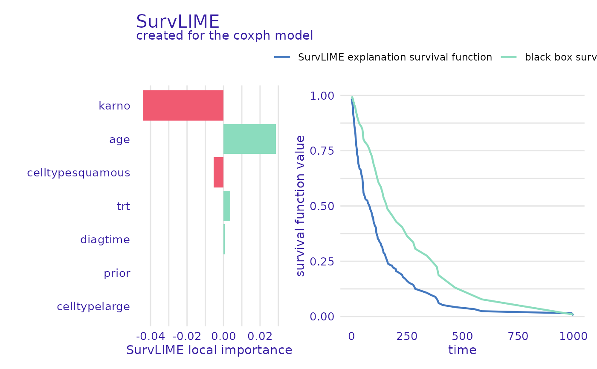

R/predict_parts.R
predict_parts.surv_explainer.RdThis function decomposes the model prediction into individual parts, which are attributions of particular variables. The explanations can be made via the SurvLIME and SurvSHAP(t) methods.
predict_parts(explainer, ...)
# S3 method for surv_explainer
predict_parts(
explainer,
new_observation,
...,
N = NULL,
type = "survshap",
output_type = "survival"
)an explainer object - model preprocessed by the explain() function
other parameters which are passed to iBreakDown::break_down if output_type=="risk", or if output_type=="survival" to surv_shap() or surv_lime() functions depending on the selected type
a new observation for which prediction need to be explained
the maximum number of observations used for calculation of attributions. If NULL (default) all observations will be used.
if output_type == "survival" must be either "survshap" or "survlime", otherwise refer to the DALEX::predict_parts
either "survival" or "risk" the type of survival model output that should be considered for explanations. If "survival" the explanations are based on the survival function. Otherwise the scalar risk predictions are used by the DALEX::predict_parts function.
An object of class "predict_parts_survival" and additional classes depending on the type of explanations. It is a list with the element result containing the results of the calculation.
There are additional parameters that are passed to internal functions
for survlime
N - a positive integer, number of observations generated in the neighbourhood
distance_metric - character, name of the distance metric to be used, only "euclidean" is implemented
kernel_width - a numeric, parameter used for calculating weights, by default it's sqrt(ncol(data)*0.75)
sampling_method - character, name of the method of generating neighbourhood, only "gaussian" is implemented
sample_around_instance - logical, if the neighbourhood should be generated with the new observation as the center (default), or should the mean of the whole dataset be used as the center
max_iter - a numeric, maximal number of iteration for the optimization problem
categorical_variables - character vector, names of variables that should be treated as categories (factors are included by default)
k - a small positive number > 1, added to chf before taking log, so that weigths aren't negative
for survshap
timestamps - a numeric vector, time points at which the survival function will be evaluated
y_true - a two element numeric vector or matrix of one row and two columns, the first element being the true observed time and the second the status of the observation, used for plotting
calculation_method - a character, only "kernel" is implemented for now.
aggregation_method - a character, either "mean_absolute" or "integral", "max_absolute", "sum_of_squares"
[1] Krzyziński, Mateusz, et al. "SurvSHAP(t): Time-dependent explanations of machine learning survival models." Knowledge-Based Systems 262 (2023): 110234
[2] Kovalev, Maxim S., et al. "SurvLIME: A method for explaining machine learning survival models." Knowledge-Based Systems 203 (2020): 106164.
# \donttest{
library(survival)
library(survex)
cph <- coxph(Surv(time, status) ~ ., data = veteran, model = TRUE, x = TRUE, y = TRUE)
cph_exp <- explain(cph)
#> Preparation of a new explainer is initiated
#> -> model label : coxph ( default )
#> -> data : 137 rows 6 cols ( extracted from the model )
#> -> target variable : 137 values ( 128 events and 9 censored ) ( extracted from the model )
#> -> times : 94 unique time points , min = 1 , mean = 119.9706 , max = 845.56
#> -> times : ( generated from y with method quantiles )
#> -> predict function : predict.coxph with type = 'risk' will be used ( default )
#> -> predict survival function : predictSurvProb.coxph will be used ( default )
#> -> predict cumulative hazard function : -log(predict_survival_function) will be used ( default )
#> -> model_info : package survival , ver. 3.4.0 , task survival ( default )
#> A new explainer has been created!
cph_predict_parts_survshap <- predict_parts(cph_exp, new_observation = veteran[1, -c(3, 4)])
head(cph_predict_parts_survshap$result)
#> trt celltype karno diagtime age
#> t=1 0.001349624 0.005733068 0.002386291 4.519434e-06 0.0007596571
#> t=1.36 0.001349624 0.005733068 0.002386291 4.519434e-06 0.0007596571
#> t=2.72 0.002014341 0.008570174 0.003548113 6.741872e-06 0.0011364914
#> t=4.24 0.003345122 0.014277010 0.005845881 1.118341e-05 0.0018961996
#> t=7 0.005332776 0.022867967 0.009202902 1.779486e-05 0.0030438276
#> t=8 0.007955812 0.034329602 0.013481251 2.646997e-05 0.0045815194
#> prior
#> t=1 0.0001739549
#> t=1.36 0.0001739549
#> t=2.72 0.0002598683
#> t=4.24 0.0004323444
#> t=7 0.0006911509
#> t=8 0.0010349400
plot(cph_predict_parts_survshap)
cph_predict_parts_survlime <- predict_parts(cph_exp, new_observation = veteran[1, -c(3, 4)],
type = "survlime")
head(cph_predict_parts_survlime$result)
#> trt karno diagtime age prior celltypelarge
#> 1 0.03827406 -0.001362365 -7.92928e-05 0.001131628 -0.001709116 -0.03619936
#> celltypesmallcell celltypesquamous
#> 1 0.007952143 -0.06699399
plot(cph_predict_parts_survlime, type = "local_importance")

# }